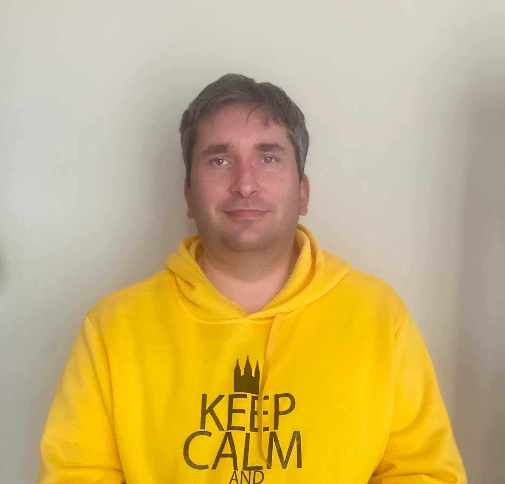

Konstantin Bolotov | WDD 130
Hello my name is Konstantin Bolotov, and I am from Moscow, Russia. I work as CIO in couple startups here. I started my IT career in 2003 as Tech Support specialist and in couple years become head of IT department. In 2007, I moved to Moscow and started my career from the beginning, hard working as System Administrator for 5 years in different companies and finally got management position. So more than 10 years I've been working in IT management in different companies, and now I prefer to work in startups because of quick decision-making startups could work at the edge of Technology. I enjoy my work and my other passion is to do Family History Research. I served my mission in 2001-2003 in Saint-Petersburg, Russia. Married to most beautiful woman, and we are raising two kids.